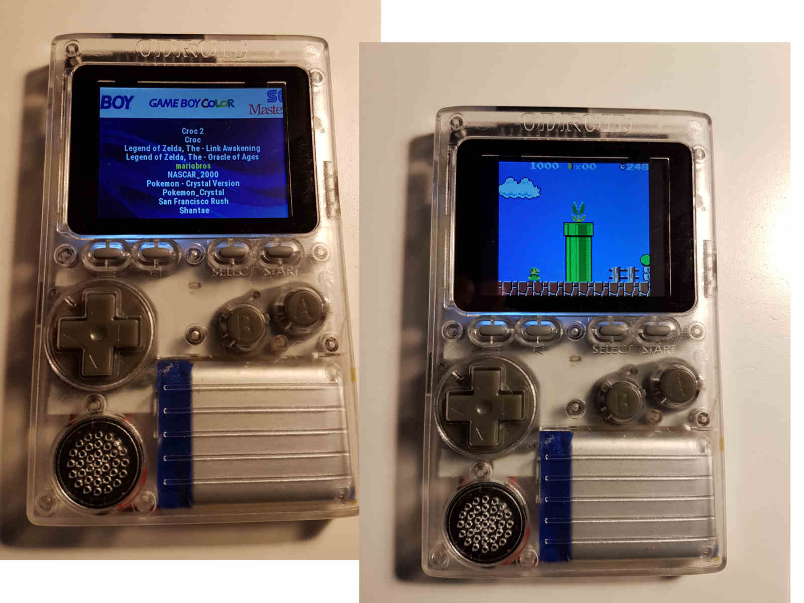
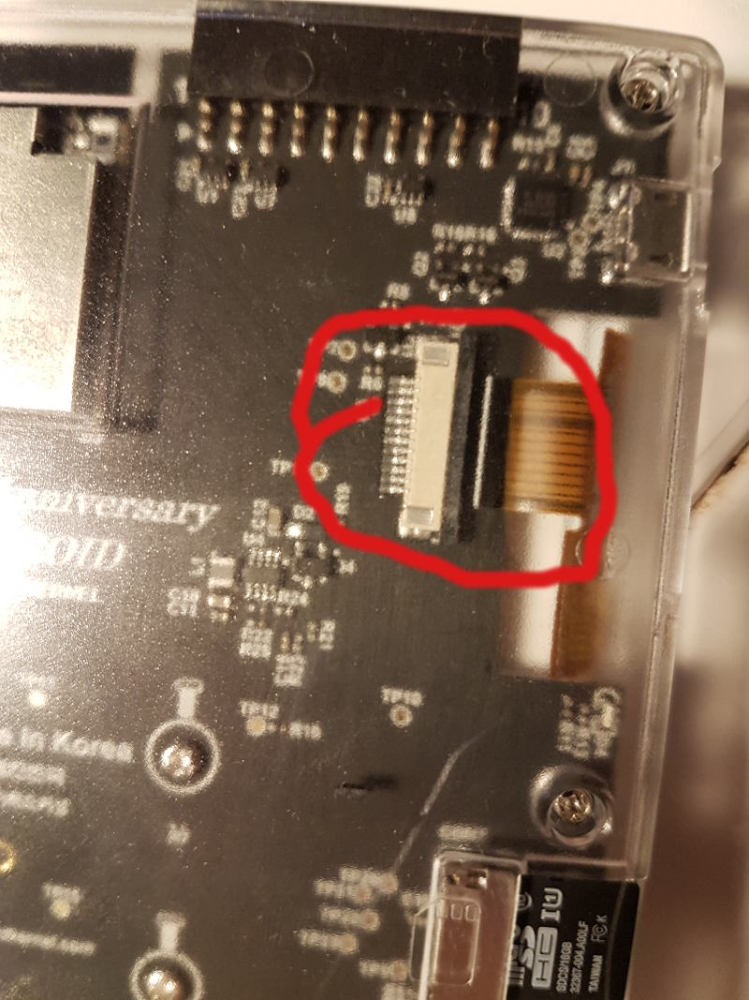

A Master Programmer passed a novice programmer one day.
The Master noted the novice’s preoccupation with a hand-held computer game.
“Excuse me,” he said, “may I examine it?”
The novice bolted to attention and handed the device to the Master. “I see that the device claims to have three levels of play: Easy, Medium, and Hard,” said the Master. “Yet every such device has another level of play, where the device seeks not to conquer the human, nor to be conquered by the human.”
“Pray, Great Master,” implored the novice, “how does one find this mysterious setting?”
The Master dropped the device to the ground and crushed it with his heel. Suddenly the novice was enlightened.
Excerpt from Tao of Programming
Be warned, the device that I am going to present is both addictive and may cause your programming skills to deteriorate. Use with moderation!
So 3, 2, 1… Ladies and Gentlemen, here it is Odroid GO:  Game console for geeks and nerds. Out of the box (I mean after you assemble it) it supports all popular ROM’s. In practice I found that GameBoy Color roms work the best. NES roms often caused the emulator to hang and GameBoy roms are eh… without colors. All in all I managed to run on Odroid GO all popular games from my childhood, like Super Mario Bross Delux and Croc without any troubles.
One minor problem that this console has and I find annoying is how game state saving works. Usually game builtin SAVE option will not work with the emulator, instead Odroid GO provides its own way of saving games. Basically when you finished playing a game you must press MENU button and only then turn off the device, otherwise your game progress will be lost. This was a little bit annoying in the beginning but I quickly get used to it.
One great aspect of this console is its price. I bought mine for about 200PLN which for this kind of device (multi-color screen, Arduino like CPU, battery included) should be considered a very good deal.
Odroid GO stores roms and game states on a microSD card that is not included in the kit. You can buy one e.g. Kingston micro SDHC 16GB for about 15PLN so this should not be a problem. Also remember that you will need an SD card reader to upload firmware and roms to the microSD card. Maybe your laptop already has one? If not you will need to buy or borrow one.
By now it should be clear that Odroid GO comes as a DIY kit. In other to assemble it correctly you will need to go through the official guide. Also watch this video before you start assembling.
During the assembly you will need a few tools:
- A small screwdriver for “cross” screws. If you own a precision screwdriver set you should be fine.
- An utility knife (box cutter) to remove buttons from the frame.
- [OPTIONAL] A latex gloves to avoid leaving greasy marks on the screen while putting it into the frame.
The assembly takes about half an hour to complete. Once you are done you will have to format your SD card and copy firmware and roms there. All these steps are described with much detail in the official guide.
For me the most difficult step was connecting the screen to the main board. The socket is very delicate and you must be extra careful not to damage it.  Also remember that after you close a lock on the socket it will be very hard to open the lock again. You should strive to connect the screen during the first try. This may sound difficult but believe me it is not. I am sure you will be fine!
After using Odroid GO for some time, I must admit that it is quite comfortable to use. Is is not too heavy and quite pleasant to handle. The battery suffice for at least eight hours of playing Super Mario Bros.
Final verdict: If you are a fan of old school games definitely buy this device. You will not be disappointed!